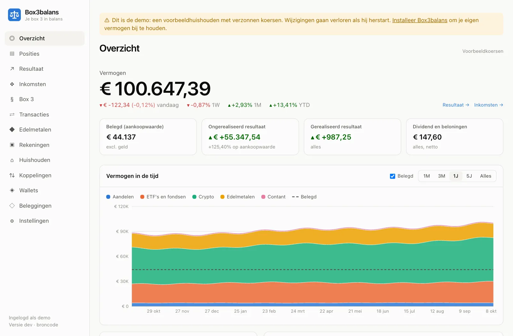

Box3balans
Houd je beleggingen, crypto en edelmetaal bij en zie wat je in box 3 betaalt. Box3balans draait thuis, op je eigen computer of NAS: je gegevens gaan nergens anders heen.

- Alles op één plek Koppelingen met Bitvavo, Kraken, Coinbase en Interactive Brokers, wallets op Bitcoin, Ethereum, Solana, Cardano en andere blockchains, en de exports van onder meer DEGIRO en Trade Republic. Spaargeld, een tweede woning en schulden vul je per jaar in.
- Box 3 per jaar, zoals de aangifte het vraagt Wat je op 1 januari had, per onderdeel en per rekening, met de belasting, het werkelijk rendement voor de tegenbewijsregeling en een dossier dat laat zien waar elk bedrag vandaan komt.
- Van jou Gratis en open source (AGPL-3.0). Geen account en geen abonnement; je installeert het zelf, bijvoorbeeld met Docker.